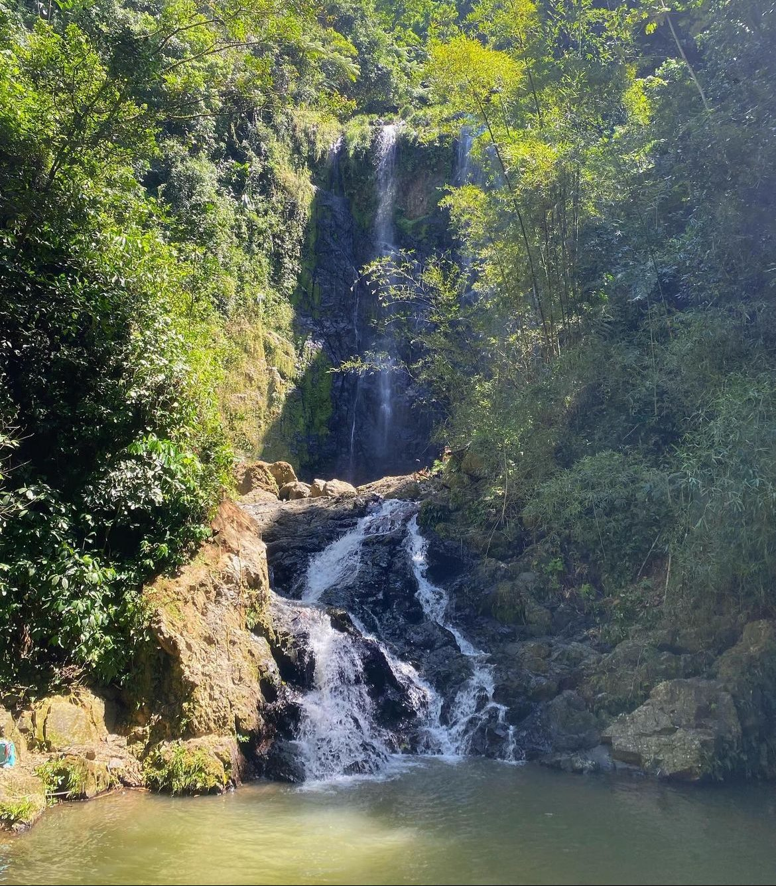
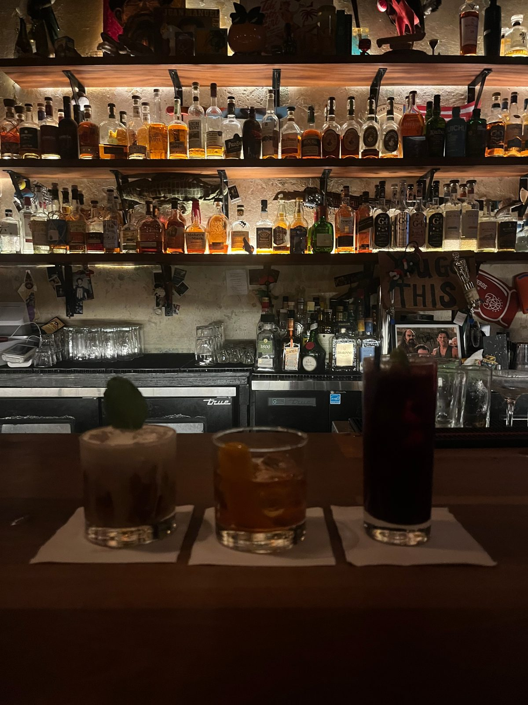

The Days
Each one private or shared, each arranged before you arrive.
Each day stands on its own. Each one also fits inside a longer journey.


01 Half day · San Juan
Old San Juan, Unhurried
Five centuries of streets, walked at the pace of the people who live on them.
A slow walk through the old city’s plazas and side streets, then toward La Perla and the sea wall, with the story told by people who know it. The Atlantic is never more than a street away.
- Duration
- Half day
- Where
- San Juan
- Format
- Private or shared
- Highlights
- Old San Juan streets and viewpoints, La Perla, local art
- On Fridays
- Live bomba in La Perla
- Pairs with
- San Juan After Dark


02 Full day · Ponce
The Southern City
Ponce is grand, warm and proud of it. We give it the whole day.
Over the mountains to the south coast, to the city known as the Pearl of the South. Neoclassical façades, the fountains of the plaza, a museum chosen for your interests, and an unhurried lunch before the drive home.
- Duration
- Full day
- Where
- Ponce
- Format
- Private or shared
- Highlights
- Plaza Las Delicias, historic architecture, museums
- Optional
- Castillo Serrallés
- Pairs with
- The Cordillera

03 Full day · Central mountains
The Cordillera
The road through the middle of the island, and the towns that grew along it.
Route PR-10 climbs from the coast into the central mountains, through more than ten towns, past lakes and coffee country. We stop where the view earns it and eat where the town does.
- Duration
- Full day
- Where
- Central mountains
- Format
- Private or shared
- Highlights
- Mountain road PR-10, ten-plus towns, lake views
- Pace
- Scenic drive with short walks
- Pairs with
- The Southern City


04 Full day · Interior rivers
River & Stone
Cold water, warm stone, and a swim you will remember on the flight home.
A day of waterfalls and river pools in the island’s interior, planned around the quieter hours. Bring a swimsuit, a towel and shoes that can get wet.
- Duration
- Full day
- Where
- Interior rivers
- Format
- Private or shared
- Highlights
- Waterfalls, river pools, forest trails
- Pace
- Light hiking and swimming
- Pairs with
- Slow Water

05 Full day · River and springs
Slow Water
A day designed to lower your shoulders.
Yoga and breathwork by the river at the caves of Aguas Buenas, then a long soak in the thermal baths of Coamo to close the day. If the river walk is not for you, the day can go straight to the baths.
- Duration
- Full day
- Where
- Aguas Buenas and Coamo
- Format
- Private or shared
- Highlights
- River yoga, breathwork, the Coamo baths
- Gentler version
- Straight to the baths
- Pairs with
- River & Stone

06 Full day · Across the island
West to the Light
From the mountains to the western coast, arriving as the light turns.
The longest of our days: Caguas and Guavate in the morning, Ponce at midday, then on to Rincón and Isabela, where the island ends and the sunset starts.
- Duration
- Full day
- Where
- Across the island
- Format
- Private or shared
- Highlights
- Caguas, Guavate, Ponce, Rincón and the Isabela coast
- Pace
- Long scenic drive with stops
- Best for
- Travelers who want the whole island in one day

07 Half day · Loíza and Piñones
Loíza, by the Sea
Just east of San Juan, a coast with its own history and its own rhythm.
Loíza is the heart of Afro-Puerto Rican culture on the island. We listen to its story through its music, its art and its kitchens, then follow the coast road through Piñones.
- Duration
- Half day
- Where
- Loíza and Piñones
- Format
- Private or shared
- Highlights
- Loíza’s history and culture, Piñones coast
- Table
- Coastal cooking from local kitchens
- Pairs with
- Old San Juan, Unhurried


08 Evening · San Juan
San Juan After Dark
San Juan’s cocktail rooms, at the hour they come alive.
An evening through a few cocktail rooms we know well, with rum and local ingredients at the center of the glass. Seats are held; the pace is conversation.
- Duration
- Evening
- Where
- San Juan
- Format
- Private or shared
- Highlights
- Craft cocktail bars, Puerto Rican rum
- Pairs with
- Any day in the collection
San Juan After Dark is for adults only. Every other day in the collection is open to all ages, at a pace set for your group.
Two to five days
Join them into a journey
Any of these days can be booked on its own. Joined together, in the order that makes sense on the map, they become a private journey of two to five days.
We have shaped three to begin with. Each one is a starting point, adjusted to you.
See the journeys
Plan your daysChoose a day. We will arrange the rest.